Note
Click here to download the full example code
Audio manipulation with torchaudio¶
torchaudio provides powerful audio I/O functions, preprocessing
transforms and dataset.
In this tutorial, we will look into how to prepare audio data and extract features that can be fed to NN models.
# When running this tutorial in Google Colab, install the required packages
# with the following.
# !pip install torchaudio librosa boto3
import torch
import torchaudio
import torchaudio.functional as F
import torchaudio.transforms as T
print(torch.__version__)
print(torchaudio.__version__)
Out:
1.9.0+cu102
0.9.0
Preparing data and utility functions (skip this section)¶
#@title Prepare data and utility functions. {display-mode: "form"}
#@markdown
#@markdown You do not need to look into this cell.
#@markdown Just execute once and you are good to go.
#@markdown
#@markdown In this tutorial, we will use a speech data from [VOiCES dataset](https://iqtlabs.github.io/voices/), which is licensed under Creative Commos BY 4.0.
#-------------------------------------------------------------------------------
# Preparation of data and helper functions.
#-------------------------------------------------------------------------------
import io
import os
import math
import tarfile
import multiprocessing
import scipy
import librosa
import boto3
from botocore import UNSIGNED
from botocore.config import Config
import requests
import matplotlib
import matplotlib.pyplot as plt
import pandas as pd
import time
from IPython.display import Audio, display
[width, height] = matplotlib.rcParams['figure.figsize']
if width < 10:
matplotlib.rcParams['figure.figsize'] = [width * 2.5, height]
_SAMPLE_DIR = "_sample_data"
SAMPLE_WAV_URL = "https://pytorch-tutorial-assets.s3.amazonaws.com/steam-train-whistle-daniel_simon.wav"
SAMPLE_WAV_PATH = os.path.join(_SAMPLE_DIR, "steam.wav")
SAMPLE_WAV_SPEECH_URL = "https://pytorch-tutorial-assets.s3.amazonaws.com/VOiCES_devkit/source-16k/train/sp0307/Lab41-SRI-VOiCES-src-sp0307-ch127535-sg0042.wav"
SAMPLE_WAV_SPEECH_PATH = os.path.join(_SAMPLE_DIR, "speech.wav")
SAMPLE_RIR_URL = "https://pytorch-tutorial-assets.s3.amazonaws.com/VOiCES_devkit/distant-16k/room-response/rm1/impulse/Lab41-SRI-VOiCES-rm1-impulse-mc01-stu-clo.wav"
SAMPLE_RIR_PATH = os.path.join(_SAMPLE_DIR, "rir.wav")
SAMPLE_NOISE_URL = "https://pytorch-tutorial-assets.s3.amazonaws.com/VOiCES_devkit/distant-16k/distractors/rm1/babb/Lab41-SRI-VOiCES-rm1-babb-mc01-stu-clo.wav"
SAMPLE_NOISE_PATH = os.path.join(_SAMPLE_DIR, "bg.wav")
SAMPLE_MP3_URL = "https://pytorch-tutorial-assets.s3.amazonaws.com/steam-train-whistle-daniel_simon.mp3"
SAMPLE_MP3_PATH = os.path.join(_SAMPLE_DIR, "steam.mp3")
SAMPLE_GSM_URL = "https://pytorch-tutorial-assets.s3.amazonaws.com/steam-train-whistle-daniel_simon.gsm"
SAMPLE_GSM_PATH = os.path.join(_SAMPLE_DIR, "steam.gsm")
SAMPLE_TAR_URL = "https://pytorch-tutorial-assets.s3.amazonaws.com/VOiCES_devkit.tar.gz"
SAMPLE_TAR_PATH = os.path.join(_SAMPLE_DIR, "sample.tar.gz")
SAMPLE_TAR_ITEM = "VOiCES_devkit/source-16k/train/sp0307/Lab41-SRI-VOiCES-src-sp0307-ch127535-sg0042.wav"
S3_BUCKET = "pytorch-tutorial-assets"
S3_KEY = "VOiCES_devkit/source-16k/train/sp0307/Lab41-SRI-VOiCES-src-sp0307-ch127535-sg0042.wav"
YESNO_DATASET_PATH = os.path.join(_SAMPLE_DIR, "yes_no")
os.makedirs(YESNO_DATASET_PATH, exist_ok=True)
os.makedirs(_SAMPLE_DIR, exist_ok=True)
def _fetch_data():
uri = [
(SAMPLE_WAV_URL, SAMPLE_WAV_PATH),
(SAMPLE_WAV_SPEECH_URL, SAMPLE_WAV_SPEECH_PATH),
(SAMPLE_RIR_URL, SAMPLE_RIR_PATH),
(SAMPLE_NOISE_URL, SAMPLE_NOISE_PATH),
(SAMPLE_MP3_URL, SAMPLE_MP3_PATH),
(SAMPLE_GSM_URL, SAMPLE_GSM_PATH),
(SAMPLE_TAR_URL, SAMPLE_TAR_PATH),
]
for url, path in uri:
with open(path, 'wb') as file_:
file_.write(requests.get(url).content)
_fetch_data()
def _download_yesno():
if os.path.exists(os.path.join(YESNO_DATASET_PATH, "waves_yesno.tar.gz")):
return
torchaudio.datasets.YESNO(root=YESNO_DATASET_PATH, download=True)
YESNO_DOWNLOAD_PROCESS = multiprocessing.Process(target=_download_yesno)
YESNO_DOWNLOAD_PROCESS.start()
def _get_sample(path, resample=None):
effects = [
["remix", "1"]
]
if resample:
effects.extend([
["lowpass", f"{resample // 2}"],
["rate", f'{resample}'],
])
return torchaudio.sox_effects.apply_effects_file(path, effects=effects)
def get_speech_sample(*, resample=None):
return _get_sample(SAMPLE_WAV_SPEECH_PATH, resample=resample)
def get_sample(*, resample=None):
return _get_sample(SAMPLE_WAV_PATH, resample=resample)
def get_rir_sample(*, resample=None, processed=False):
rir_raw, sample_rate = _get_sample(SAMPLE_RIR_PATH, resample=resample)
if not processed:
return rir_raw, sample_rate
rir = rir_raw[:, int(sample_rate*1.01):int(sample_rate*1.3)]
rir = rir / torch.norm(rir, p=2)
rir = torch.flip(rir, [1])
return rir, sample_rate
def get_noise_sample(*, resample=None):
return _get_sample(SAMPLE_NOISE_PATH, resample=resample)
def print_stats(waveform, sample_rate=None, src=None):
if src:
print("-" * 10)
print("Source:", src)
print("-" * 10)
if sample_rate:
print("Sample Rate:", sample_rate)
print("Shape:", tuple(waveform.shape))
print("Dtype:", waveform.dtype)
print(f" - Max: {waveform.max().item():6.3f}")
print(f" - Min: {waveform.min().item():6.3f}")
print(f" - Mean: {waveform.mean().item():6.3f}")
print(f" - Std Dev: {waveform.std().item():6.3f}")
print()
print(waveform)
print()
def plot_waveform(waveform, sample_rate, title="Waveform", xlim=None, ylim=None):
waveform = waveform.numpy()
num_channels, num_frames = waveform.shape
time_axis = torch.arange(0, num_frames) / sample_rate
figure, axes = plt.subplots(num_channels, 1)
if num_channels == 1:
axes = [axes]
for c in range(num_channels):
axes[c].plot(time_axis, waveform[c], linewidth=1)
axes[c].grid(True)
if num_channels > 1:
axes[c].set_ylabel(f'Channel {c+1}')
if xlim:
axes[c].set_xlim(xlim)
if ylim:
axes[c].set_ylim(ylim)
figure.suptitle(title)
plt.show(block=False)
def plot_specgram(waveform, sample_rate, title="Spectrogram", xlim=None):
waveform = waveform.numpy()
num_channels, num_frames = waveform.shape
time_axis = torch.arange(0, num_frames) / sample_rate
figure, axes = plt.subplots(num_channels, 1)
if num_channels == 1:
axes = [axes]
for c in range(num_channels):
axes[c].specgram(waveform[c], Fs=sample_rate)
if num_channels > 1:
axes[c].set_ylabel(f'Channel {c+1}')
if xlim:
axes[c].set_xlim(xlim)
figure.suptitle(title)
plt.show(block=False)
def play_audio(waveform, sample_rate):
waveform = waveform.numpy()
num_channels, num_frames = waveform.shape
if num_channels == 1:
display(Audio(waveform[0], rate=sample_rate))
elif num_channels == 2:
display(Audio((waveform[0], waveform[1]), rate=sample_rate))
else:
raise ValueError("Waveform with more than 2 channels are not supported.")
def inspect_file(path):
print("-" * 10)
print("Source:", path)
print("-" * 10)
print(f" - File size: {os.path.getsize(path)} bytes")
print(f" - {torchaudio.info(path)}")
def plot_spectrogram(spec, title=None, ylabel='freq_bin', aspect='auto', xmax=None):
fig, axs = plt.subplots(1, 1)
axs.set_title(title or 'Spectrogram (db)')
axs.set_ylabel(ylabel)
axs.set_xlabel('frame')
im = axs.imshow(librosa.power_to_db(spec), origin='lower', aspect=aspect)
if xmax:
axs.set_xlim((0, xmax))
fig.colorbar(im, ax=axs)
plt.show(block=False)
def plot_mel_fbank(fbank, title=None):
fig, axs = plt.subplots(1, 1)
axs.set_title(title or 'Filter bank')
axs.imshow(fbank, aspect='auto')
axs.set_ylabel('frequency bin')
axs.set_xlabel('mel bin')
plt.show(block=False)
def get_spectrogram(
n_fft = 400,
win_len = None,
hop_len = None,
power = 2.0,
):
waveform, _ = get_speech_sample()
spectrogram = T.Spectrogram(
n_fft=n_fft,
win_length=win_len,
hop_length=hop_len,
center=True,
pad_mode="reflect",
power=power,
)
return spectrogram(waveform)
def plot_pitch(waveform, sample_rate, pitch):
figure, axis = plt.subplots(1, 1)
axis.set_title("Pitch Feature")
axis.grid(True)
end_time = waveform.shape[1] / sample_rate
time_axis = torch.linspace(0, end_time, waveform.shape[1])
axis.plot(time_axis, waveform[0], linewidth=1, color='gray', alpha=0.3)
axis2 = axis.twinx()
time_axis = torch.linspace(0, end_time, pitch.shape[1])
ln2 = axis2.plot(
time_axis, pitch[0], linewidth=2, label='Pitch', color='green')
axis2.legend(loc=0)
plt.show(block=False)
def plot_kaldi_pitch(waveform, sample_rate, pitch, nfcc):
figure, axis = plt.subplots(1, 1)
axis.set_title("Kaldi Pitch Feature")
axis.grid(True)
end_time = waveform.shape[1] / sample_rate
time_axis = torch.linspace(0, end_time, waveform.shape[1])
axis.plot(time_axis, waveform[0], linewidth=1, color='gray', alpha=0.3)
time_axis = torch.linspace(0, end_time, pitch.shape[1])
ln1 = axis.plot(time_axis, pitch[0], linewidth=2, label='Pitch', color='green')
axis.set_ylim((-1.3, 1.3))
axis2 = axis.twinx()
time_axis = torch.linspace(0, end_time, nfcc.shape[1])
ln2 = axis2.plot(
time_axis, nfcc[0], linewidth=2, label='NFCC', color='blue', linestyle='--')
lns = ln1 + ln2
labels = [l.get_label() for l in lns]
axis.legend(lns, labels, loc=0)
plt.show(block=False)
DEFAULT_OFFSET = 201
SWEEP_MAX_SAMPLE_RATE = 48000
DEFAULT_LOWPASS_FILTER_WIDTH = 6
DEFAULT_ROLLOFF = 0.99
DEFAULT_RESAMPLING_METHOD = 'sinc_interpolation'
def _get_log_freq(sample_rate, max_sweep_rate, offset):
"""Get freqs evenly spaced out in log-scale, between [0, max_sweep_rate // 2]
offset is used to avoid negative infinity `log(offset + x)`.
"""
half = sample_rate // 2
start, stop = math.log(offset), math.log(offset + max_sweep_rate // 2)
return torch.exp(torch.linspace(start, stop, sample_rate, dtype=torch.double)) - offset
def _get_inverse_log_freq(freq, sample_rate, offset):
"""Find the time where the given frequency is given by _get_log_freq"""
half = sample_rate // 2
return sample_rate * (math.log(1 + freq / offset) / math.log(1 + half / offset))
def _get_freq_ticks(sample_rate, offset, f_max):
# Given the original sample rate used for generating the sweep,
# find the x-axis value where the log-scale major frequency values fall in
time, freq = [], []
for exp in range(2, 5):
for v in range(1, 10):
f = v * 10 ** exp
if f < sample_rate // 2:
t = _get_inverse_log_freq(f, sample_rate, offset) / sample_rate
time.append(t)
freq.append(f)
t_max = _get_inverse_log_freq(f_max, sample_rate, offset) / sample_rate
time.append(t_max)
freq.append(f_max)
return time, freq
def plot_sweep(waveform, sample_rate, title, max_sweep_rate=SWEEP_MAX_SAMPLE_RATE, offset=DEFAULT_OFFSET):
x_ticks = [100, 500, 1000, 5000, 10000, 20000, max_sweep_rate // 2]
y_ticks = [1000, 5000, 10000, 20000, sample_rate//2]
time, freq = _get_freq_ticks(max_sweep_rate, offset, sample_rate // 2)
freq_x = [f if f in x_ticks and f <= max_sweep_rate // 2 else None for f in freq]
freq_y = [f for f in freq if f >= 1000 and f in y_ticks and f <= sample_rate // 2]
figure, axis = plt.subplots(1, 1)
axis.specgram(waveform[0].numpy(), Fs=sample_rate)
plt.xticks(time, freq_x)
plt.yticks(freq_y, freq_y)
axis.set_xlabel('Original Signal Frequency (Hz, log scale)')
axis.set_ylabel('Waveform Frequency (Hz)')
axis.xaxis.grid(True, alpha=0.67)
axis.yaxis.grid(True, alpha=0.67)
figure.suptitle(f'{title} (sample rate: {sample_rate} Hz)')
plt.show(block=True)
def get_sine_sweep(sample_rate, offset=DEFAULT_OFFSET):
max_sweep_rate = sample_rate
freq = _get_log_freq(sample_rate, max_sweep_rate, offset)
delta = 2 * math.pi * freq / sample_rate
cummulative = torch.cumsum(delta, dim=0)
signal = torch.sin(cummulative).unsqueeze(dim=0)
return signal
def benchmark_resample(
method,
waveform,
sample_rate,
resample_rate,
lowpass_filter_width=DEFAULT_LOWPASS_FILTER_WIDTH,
rolloff=DEFAULT_ROLLOFF,
resampling_method=DEFAULT_RESAMPLING_METHOD,
beta=None,
librosa_type=None,
iters=5
):
if method == "functional":
begin = time.time()
for _ in range(iters):
F.resample(waveform, sample_rate, resample_rate, lowpass_filter_width=lowpass_filter_width,
rolloff=rolloff, resampling_method=resampling_method)
elapsed = time.time() - begin
return elapsed / iters
elif method == "transforms":
resampler = T.Resample(sample_rate, resample_rate, lowpass_filter_width=lowpass_filter_width,
rolloff=rolloff, resampling_method=resampling_method, dtype=waveform.dtype)
begin = time.time()
for _ in range(iters):
resampler(waveform)
elapsed = time.time() - begin
return elapsed / iters
elif method == "librosa":
waveform_np = waveform.squeeze().numpy()
begin = time.time()
for _ in range(iters):
librosa.resample(waveform_np, sample_rate, resample_rate, res_type=librosa_type)
elapsed = time.time() - begin
return elapsed / iters
Audio I/O¶
torchaudio integrates libsox and provides a rich set of audio I/O.
Quering audio metadata¶
torchaudio.info function fetches metadata of audio. You can provide
a path-like object or file-like object.
metadata = torchaudio.info(SAMPLE_WAV_PATH)
print(metadata)
Out:
AudioMetaData(sample_rate=44100, num_frames=109368, num_channels=2, bits_per_sample=16, encoding=PCM_S)
Where
sample_rateis the sampling rate of the audionum_channelsis the number of channelsnum_framesis the number of frames per channelbits_per_sampleis bit depthencodingis the sample coding format
The values encoding can take are one of the following
"PCM_S": Signed integer linear PCM"PCM_U": Unsigned integer linear PCM"PCM_F": Floating point linear PCM"FLAC": Flac, Free Lossless Audio Codec"ULAW": Mu-law, [wikipedia]"ALAW": A-law [wikipedia]"MP3": MP3, MPEG-1 Audio Layer III"VORBIS": OGG Vorbis [xiph.org]"AMR_NB": Adaptive Multi-Rate [wikipedia]"AMR_WB": Adaptive Multi-Rate Wideband [wikipedia]"OPUS": Opus [opus-codec.org]"GSM": GSM-FR [wikipedia]"UNKNOWN"None of avobe
Note
bits_per_samplecan be0for formats with compression and/or variable bit rate. (such as mp3)num_framescan be0for GSM-FR format.
metadata = torchaudio.info(SAMPLE_MP3_PATH)
print(metadata)
metadata = torchaudio.info(SAMPLE_GSM_PATH)
print(metadata)
Out:
AudioMetaData(sample_rate=44100, num_frames=110559, num_channels=2, bits_per_sample=0, encoding=MP3)
AudioMetaData(sample_rate=8000, num_frames=0, num_channels=1, bits_per_sample=0, encoding=GSM)
Querying file-like object¶
info function works on file-like object as well.
print("Source:", SAMPLE_WAV_URL)
with requests.get(SAMPLE_WAV_URL, stream=True) as response:
metadata = torchaudio.info(response.raw)
print(metadata)
Out:
Source: https://pytorch-tutorial-assets.s3.amazonaws.com/steam-train-whistle-daniel_simon.wav
AudioMetaData(sample_rate=44100, num_frames=109368, num_channels=2, bits_per_sample=16, encoding=PCM_S)
Note When passing file-like object, info function does not read
all the data, instead it only reads the beginning portion of data.
Therefore, depending on the audio format, it cannot get the correct
metadata, including the format itself. The following example illustrates
this.
- Use
formatargument to tell what audio format it is. - The returned metadata has
num_frames = 0
print("Source:", SAMPLE_MP3_URL)
with requests.get(SAMPLE_MP3_URL, stream=True) as response:
metadata = torchaudio.info(response.raw, format="mp3")
print(f"Fetched {response.raw.tell()} bytes.")
print(metadata)
Out:
Source: https://pytorch-tutorial-assets.s3.amazonaws.com/steam-train-whistle-daniel_simon.mp3
Fetched 4096 bytes.
AudioMetaData(sample_rate=44100, num_frames=0, num_channels=2, bits_per_sample=0, encoding=MP3)
Loading audio data into Tensor¶
To load audio data, you can use torchaudio.load.
This function accepts path-like object and file-like object.
The returned value is a tuple of waveform (Tensor) and sample rate
(int).
By default, the resulting tensor object has dtype=torch.float32 and
its value range is normalized within [-1.0, 1.0].
For the list of supported format, please refer to the torchaudio documentation.
waveform, sample_rate = torchaudio.load(SAMPLE_WAV_SPEECH_PATH)
print_stats(waveform, sample_rate=sample_rate)
plot_waveform(waveform, sample_rate)
plot_specgram(waveform, sample_rate)
play_audio(waveform, sample_rate)
- 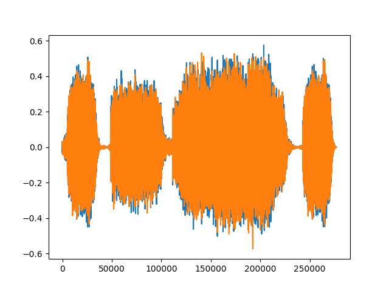
Out:
Sample Rate: 16000
Shape: (1, 54400)
Dtype: torch.float32
- Max: 0.668
- Min: -1.000
- Mean: 0.000
- Std Dev: 0.122
tensor([[0.0183, 0.0180, 0.0180, ..., 0.0018, 0.0019, 0.0032]])
<IPython.lib.display.Audio object>
Loading from file-like object¶
torchaudio’s I/O functions now support file-like object. This
allows to fetch audio data and decode at the same time from the location
other than local file system. The following examples illustrates this.
# Load audio data as HTTP request
with requests.get(SAMPLE_WAV_SPEECH_URL, stream=True) as response:
waveform, sample_rate = torchaudio.load(response.raw)
plot_specgram(waveform, sample_rate, title="HTTP datasource")
# Load audio from tar file
with tarfile.open(SAMPLE_TAR_PATH, mode='r') as tarfile_:
fileobj = tarfile_.extractfile(SAMPLE_TAR_ITEM)
waveform, sample_rate = torchaudio.load(fileobj)
plot_specgram(waveform, sample_rate, title="TAR file")
# Load audio from S3
client = boto3.client('s3', config=Config(signature_version=UNSIGNED))
response = client.get_object(Bucket=S3_BUCKET, Key=S3_KEY)
waveform, sample_rate = torchaudio.load(response['Body'])
plot_specgram(waveform, sample_rate, title="From S3")
- 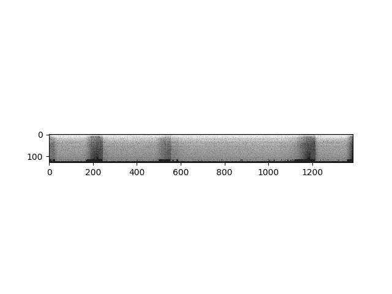
- 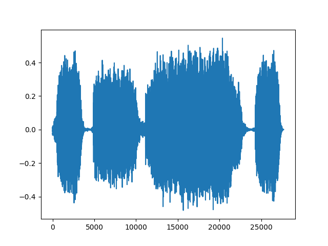
- 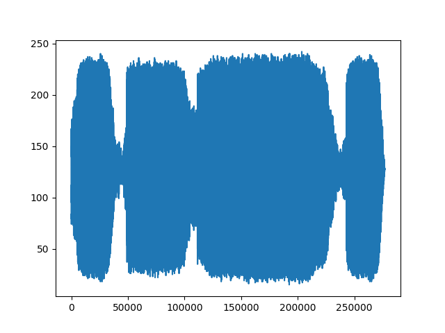
Tips on slicing¶
Providing num_frames and frame_offset arguments will slice the
resulting Tensor object while decoding.
The same result can be achieved using the regular Tensor slicing,
(i.e. waveform[:, frame_offset:frame_offset+num_frames]) however,
providing num_frames and frame_offset arguments is more
efficient.
This is because the function will stop data acquisition and decoding once it finishes decoding the requested frames. This is advantageous when the audio data are transfered via network as the data transfer will stop as soon as the necessary amount of data is fetched.
The following example illustrates this;
# Illustration of two different decoding methods.
# The first one will fetch all the data and decode them, while
# the second one will stop fetching data once it completes decoding.
# The resulting waveforms are identical.
frame_offset, num_frames = 16000, 16000 # Fetch and decode the 1 - 2 seconds
print("Fetching all the data...")
with requests.get(SAMPLE_WAV_SPEECH_URL, stream=True) as response:
waveform1, sample_rate1 = torchaudio.load(response.raw)
waveform1 = waveform1[:, frame_offset:frame_offset+num_frames]
print(f" - Fetched {response.raw.tell()} bytes")
print("Fetching until the requested frames are available...")
with requests.get(SAMPLE_WAV_SPEECH_URL, stream=True) as response:
waveform2, sample_rate2 = torchaudio.load(
response.raw, frame_offset=frame_offset, num_frames=num_frames)
print(f" - Fetched {response.raw.tell()} bytes")
print("Checking the resulting waveform ... ", end="")
assert (waveform1 == waveform2).all()
print("matched!")
Out:
Fetching all the data...
- Fetched 108844 bytes
Fetching until the requested frames are available...
- Fetched 65580 bytes
Checking the resulting waveform ... matched!
Saving audio to file¶
To save audio data in the formats intepretable by common applications,
you can use torchaudio.save.
This function accepts path-like object and file-like object.
When passing file-like object, you also need to provide format
argument so that the function knows which format it should be using. In
case of path-like object, the function will detemine the format based on
the extension. If you are saving to a file without extension, you need
to provide format argument.
When saving as WAV format, the default encoding for float32 Tensor
is 32-bit floating-point PCM. You can provide encoding and
bits_per_sample argument to change this. For example, to save data
in 16 bit signed integer PCM, you can do the following.
Note Saving data in encodings with lower bit depth reduces the resulting file size but loses precision.
waveform, sample_rate = get_sample()
print_stats(waveform, sample_rate=sample_rate)
# Save without any encoding option.
# The function will pick up the encoding which
# the provided data fit
path = "save_example_default.wav"
torchaudio.save(path, waveform, sample_rate)
inspect_file(path)
# Save as 16-bit signed integer Linear PCM
# The resulting file occupies half the storage but loses precision
path = "save_example_PCM_S16.wav"
torchaudio.save(
path, waveform, sample_rate,
encoding="PCM_S", bits_per_sample=16)
inspect_file(path)
Out:
Sample Rate: 44100
Shape: (1, 109368)
Dtype: torch.float32
- Max: 0.508
- Min: -0.449
- Mean: -0.000
- Std Dev: 0.122
tensor([[0.0027, 0.0063, 0.0092, ..., 0.0032, 0.0047, 0.0052]])
----------
Source: save_example_default.wav
----------
- File size: 437530 bytes
- AudioMetaData(sample_rate=44100, num_frames=109368, num_channels=1, bits_per_sample=32, encoding=PCM_F)
----------
Source: save_example_PCM_S16.wav
----------
- File size: 218780 bytes
- AudioMetaData(sample_rate=44100, num_frames=109368, num_channels=1, bits_per_sample=16, encoding=PCM_S)
torchaudio.save can also handle other formats. To name a few;
waveform, sample_rate = get_sample(resample=8000)
formats = [
"mp3",
"flac",
"vorbis",
"sph",
"amb",
"amr-nb",
"gsm",
]
for format in formats:
path = f"save_example.{format}"
torchaudio.save(path, waveform, sample_rate, format=format)
inspect_file(path)
Out:
----------
Source: save_example.mp3
----------
- File size: 2664 bytes
- AudioMetaData(sample_rate=8000, num_frames=21312, num_channels=1, bits_per_sample=0, encoding=MP3)
----------
Source: save_example.flac
----------
- File size: 47315 bytes
- AudioMetaData(sample_rate=8000, num_frames=19840, num_channels=1, bits_per_sample=24, encoding=FLAC)
----------
Source: save_example.vorbis
----------
- File size: 9967 bytes
- AudioMetaData(sample_rate=8000, num_frames=19840, num_channels=1, bits_per_sample=0, encoding=VORBIS)
----------
Source: save_example.sph
----------
- File size: 80384 bytes
- AudioMetaData(sample_rate=8000, num_frames=19840, num_channels=1, bits_per_sample=32, encoding=PCM_S)
----------
Source: save_example.amb
----------
- File size: 79418 bytes
- AudioMetaData(sample_rate=8000, num_frames=19840, num_channels=1, bits_per_sample=32, encoding=PCM_F)
----------
Source: save_example.amr-nb
----------
- File size: 1618 bytes
- AudioMetaData(sample_rate=8000, num_frames=19840, num_channels=1, bits_per_sample=0, encoding=AMR_NB)
----------
Source: save_example.gsm
----------
- File size: 4092 bytes
- AudioMetaData(sample_rate=8000, num_frames=0, num_channels=1, bits_per_sample=0, encoding=GSM)
Saving to file-like object¶
Similar to the other I/O functions, you can save audio into file-like
object. When saving to file-like object, format argument is
required.
waveform, sample_rate = get_sample()
# Saving to Bytes buffer
buffer_ = io.BytesIO()
torchaudio.save(buffer_, waveform, sample_rate, format="wav")
buffer_.seek(0)
print(buffer_.read(16))
Out:
b'RIFF\x12\xad\x06\x00WAVEfmt '
Resampling¶
To resample an audio waveform from one freqeuncy to another, you can use
transforms.Resample or functional.resample.
transforms.Resample precomputes and caches the kernel used for
resampling, while functional.resample computes it on the fly, so
using transforms.Resample will result in a speedup if resampling
multiple waveforms using the same parameters (see Benchmarking section).
Both resampling methods use bandlimited sinc
interpolation to compute
signal values at arbitrary time steps. The implementation involves
convolution, so we can take advantage of GPU / multithreading for
performance improvements. When using resampling in multiple
subprocesses, such as data loading with multiple worker processes, your
application might create more threads than your system can handle
efficiently. Setting torch.set_num_threads(1) might help in this
case.
Because a finite number of samples can only represent a finite number of frequencies, resampling does not produce perfect results, and a variety of parameters can be used to control for its quality and computational speed. We demonstrate these properties through resampling a logarithmic sine sweep, which is a sine wave that increases exponentially in frequency over time.
The spectrograms below show the frequency representation of the signal, where the x-axis labels correspond to the frequency of the original waveform (in log scale), the y-axis corresponds to the frequency of the plotted waveform, and the color intensity refers to amplitude.
sample_rate = 48000
resample_rate = 32000
waveform = get_sine_sweep(sample_rate)
plot_sweep(waveform, sample_rate, title="Original Waveform")
play_audio(waveform, sample_rate)
resampler = T.Resample(sample_rate, resample_rate, dtype=waveform.dtype)
resampled_waveform = resampler(waveform)
plot_sweep(resampled_waveform, resample_rate, title="Resampled Waveform")
play_audio(waveform, sample_rate)
- 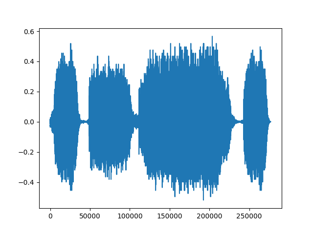
- 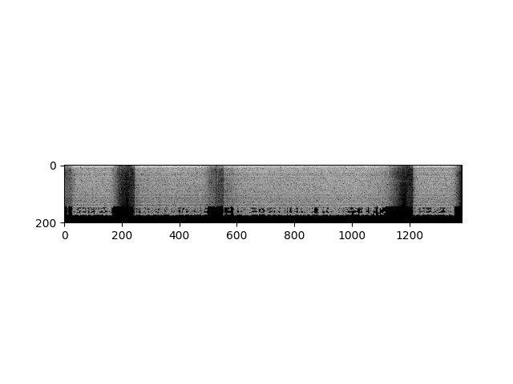
Out:
<IPython.lib.display.Audio object>
<IPython.lib.display.Audio object>
Controling resampling quality with parameters¶
Lowpass filter width¶
Because the filter used for interpolation extends infinitely, the
lowpass_filter_width parameter is used to control for the width of
the filter to use to window the interpolation. It is also referred to as
the number of zero crossings, since the interpolation passes through
zero at every time unit. Using a larger lowpass_filter_width
provides a sharper, more precise filter, but is more computationally
expensive.
sample_rate = 48000
resample_rate = 32000
resampled_waveform = F.resample(waveform, sample_rate, resample_rate, lowpass_filter_width=6)
plot_sweep(resampled_waveform, resample_rate, title="lowpass_filter_width=6")
resampled_waveform = F.resample(waveform, sample_rate, resample_rate, lowpass_filter_width=128)
plot_sweep(resampled_waveform, resample_rate, title="lowpass_filter_width=128")
- 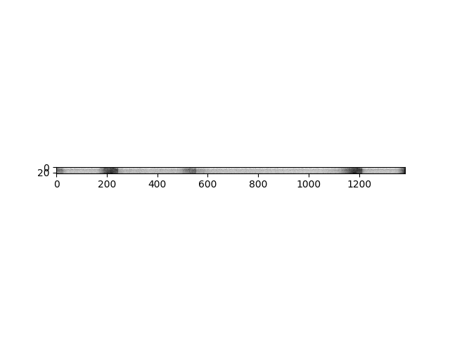
- 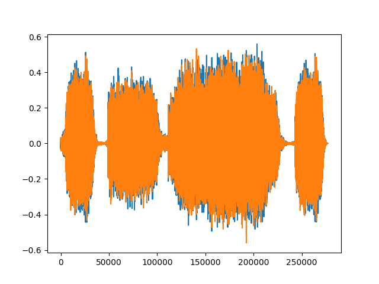
Rolloff¶
The rolloff parameter is represented as a fraction of the Nyquist
frequency, which is the maximal frequency representable by a given
finite sample rate. rolloff determines the lowpass filter cutoff and
controls the degree of aliasing, which takes place when frequencies
higher than the Nyquist are mapped to lower frequencies. A lower rolloff
will therefore reduce the amount of aliasing, but it will also reduce
some of the higher frequencies.
sample_rate = 48000
resample_rate = 32000
resampled_waveform = F.resample(waveform, sample_rate, resample_rate, rolloff=0.99)
plot_sweep(resampled_waveform, resample_rate, title="rolloff=0.99")
resampled_waveform = F.resample(waveform, sample_rate, resample_rate, rolloff=0.8)
plot_sweep(resampled_waveform, resample_rate, title="rolloff=0.8")
- 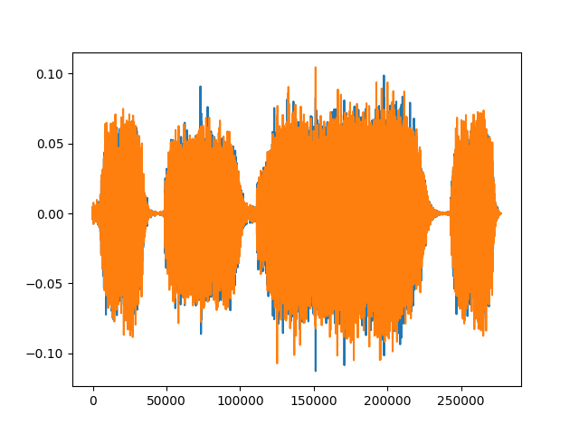
Window function¶
By default, torchaudio’s resample uses the Hann window filter, which is
a weighted cosine function. It additionally supports the Kaiser window,
which is a near optimal window function that contains an additional
beta parameter that allows for the design of the smoothness of the
filter and width of impulse. This can be controlled using the
resampling_method parameter.
sample_rate = 48000
resample_rate = 32000
resampled_waveform = F.resample(waveform, sample_rate, resample_rate, resampling_method="sinc_interpolation")
plot_sweep(resampled_waveform, resample_rate, title="Hann Window Default")
resampled_waveform = F.resample(waveform, sample_rate, resample_rate, resampling_method="kaiser_window")
plot_sweep(resampled_waveform, resample_rate, title="Kaiser Window Default")
- 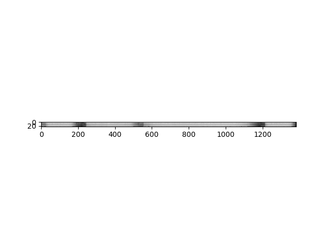
- 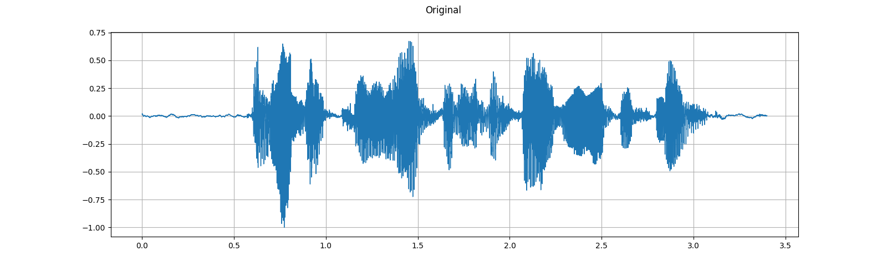
Comparison against librosa¶
torchaudio’s resample function can be used to produce results similar to that of librosa (resampy)’s kaiser window resampling, with some noise
sample_rate = 48000
resample_rate = 32000
### kaiser_best
resampled_waveform = F.resample(
waveform,
sample_rate,
resample_rate,
lowpass_filter_width=64,
rolloff=0.9475937167399596,
resampling_method="kaiser_window",
beta=14.769656459379492
)
plot_sweep(resampled_waveform, resample_rate, title="Kaiser Window Best (torchaudio)")
librosa_resampled_waveform = torch.from_numpy(
librosa.resample(waveform.squeeze().numpy(), sample_rate, resample_rate, res_type='kaiser_best')).unsqueeze(0)
plot_sweep(librosa_resampled_waveform, resample_rate, title="Kaiser Window Best (librosa)")
mse = torch.square(resampled_waveform - librosa_resampled_waveform).mean().item()
print("torchaudio and librosa kaiser best MSE:", mse)
### kaiser_fast
resampled_waveform = F.resample(
waveform,
sample_rate,
resample_rate,
lowpass_filter_width=16,
rolloff=0.85,
resampling_method="kaiser_window",
beta=8.555504641634386
)
plot_specgram(resampled_waveform, resample_rate, title="Kaiser Window Fast (torchaudio)")
librosa_resampled_waveform = torch.from_numpy(
librosa.resample(waveform.squeeze().numpy(), sample_rate, resample_rate, res_type='kaiser_fast')).unsqueeze(0)
plot_sweep(librosa_resampled_waveform, resample_rate, title="Kaiser Window Fast (librosa)")
mse = torch.square(resampled_waveform - librosa_resampled_waveform).mean().item()
print("torchaudio and librosa kaiser fast MSE:", mse)
- 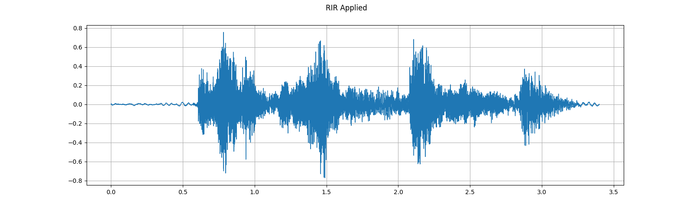
- 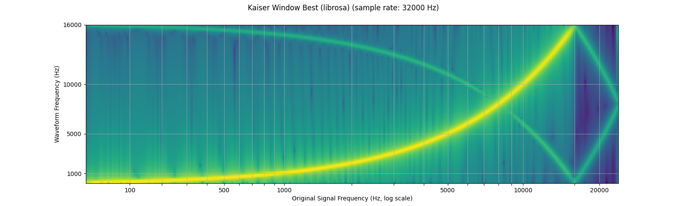
- 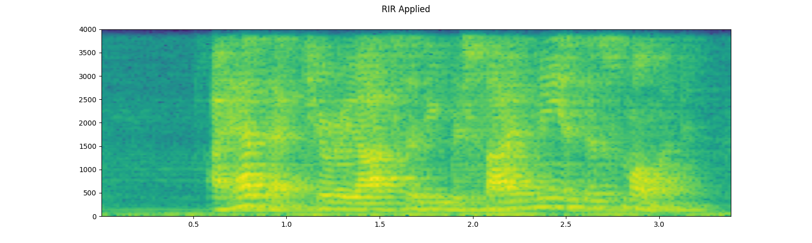
- 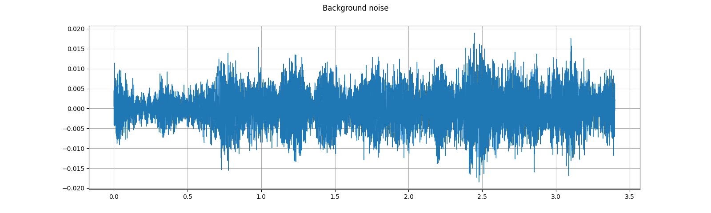
Out:
torchaudio and librosa kaiser best MSE: 2.080690115365992e-06
torchaudio and librosa kaiser fast MSE: 2.5200744248601027e-05
Performance Benchmarking¶
Below are benchmarks for downsampling and upsampling waveforms between
two pairs of sampling rates. We demonstrate the performance implications
that the lowpass_filter_wdith, window type, and sample rates can
have. Additionally, we provide a comparison against librosa’s
kaiser_best and kaiser_fast using their corresponding parameters
in torchaudio.
To elaborate on the results:
- a larger lowpass_filter_width results in a larger resampling kernel,
and therefore increases computation time for both the kernel computation and convolution
- using
kaiser_windowresults in longer computation times than the defaultsinc_interpolationbecause it is more complex to compute the intermediate window values - a large GCD between the sample and resample rate will result in a simplification that allows for a smaller kernel and faster kernel computation.
configs = {
"downsample (48 -> 44.1 kHz)": [48000, 44100],
"downsample (16 -> 8 kHz)": [16000, 8000],
"upsample (44.1 -> 48 kHz)": [44100, 48000],
"upsample (8 -> 16 kHz)": [8000, 1600],
}
for label in configs:
times, rows = [], []
sample_rate = configs[label][0]
resample_rate = configs[label][1]
waveform = get_sine_sweep(sample_rate)
# sinc 64 zero-crossings
f_time = benchmark_resample("functional", waveform, sample_rate, resample_rate, lowpass_filter_width=64)
t_time = benchmark_resample("transforms", waveform, sample_rate, resample_rate, lowpass_filter_width=64)
times.append([None, 1000 * f_time, 1000 * t_time])
rows.append(f"sinc (width 64)")
# sinc 6 zero-crossings
f_time = benchmark_resample("functional", waveform, sample_rate, resample_rate, lowpass_filter_width=16)
t_time = benchmark_resample("transforms", waveform, sample_rate, resample_rate, lowpass_filter_width=16)
times.append([None, 1000 * f_time, 1000 * t_time])
rows.append(f"sinc (width 16)")
# kaiser best
lib_time = benchmark_resample("librosa", waveform, sample_rate, resample_rate, librosa_type="kaiser_best")
f_time = benchmark_resample(
"functional",
waveform,
sample_rate,
resample_rate,
lowpass_filter_width=64,
rolloff=0.9475937167399596,
resampling_method="kaiser_window",
beta=14.769656459379492)
t_time = benchmark_resample(
"transforms",
waveform,
sample_rate,
resample_rate,
lowpass_filter_width=64,
rolloff=0.9475937167399596,
resampling_method="kaiser_window",
beta=14.769656459379492)
times.append([1000 * lib_time, 1000 * f_time, 1000 * t_time])
rows.append(f"kaiser_best")
# kaiser fast
lib_time = benchmark_resample("librosa", waveform, sample_rate, resample_rate, librosa_type="kaiser_fast")
f_time = benchmark_resample(
"functional",
waveform,
sample_rate,
resample_rate,
lowpass_filter_width=16,
rolloff=0.85,
resampling_method="kaiser_window",
beta=8.555504641634386)
t_time = benchmark_resample(
"transforms",
waveform,
sample_rate,
resample_rate,
lowpass_filter_width=16,
rolloff=0.85,
resampling_method="kaiser_window",
beta=8.555504641634386)
times.append([1000 * lib_time, 1000 * f_time, 1000 * t_time])
rows.append(f"kaiser_fast")
df = pd.DataFrame(times,
columns=["librosa", "functional", "transforms"],
index=rows)
df.columns = pd.MultiIndex.from_product([[f"{label} time (ms)"],df.columns])
display(df.round(2))
Out:
downsample (48 -> 44.1 kHz) time (ms)
librosa functional transforms
sinc (width 64) NaN 44.68 21.34
sinc (width 16) NaN 27.70 0.46
kaiser_best 64.34 54.73 28.32
kaiser_fast 14.02 22.53 0.72
downsample (16 -> 8 kHz) time (ms)
librosa functional transforms
sinc (width 64) NaN 17.07 18.32
sinc (width 16) NaN 9.33 0.77
kaiser_best 21.47 9.85 9.01
kaiser_fast 6.24 2.68 1.06
upsample (44.1 -> 48 kHz) time (ms)
librosa functional transforms
sinc (width 64) NaN 28.33 0.65
sinc (width 16) NaN 21.02 0.54
kaiser_best 66.17 53.42 28.89
kaiser_fast 16.23 56.21 26.04
upsample (8 -> 16 kHz) time (ms)
librosa functional transforms
sinc (width 64) NaN 14.70 6.68
sinc (width 16) NaN 2.87 0.42
kaiser_best 9.95 2.44 4.18
kaiser_fast 4.24 0.72 0.63
Data Augmentation¶
torchaudio provides a variety of ways to augment audio data.
Applying effects and filtering¶
torchaudio.sox_effects module provides ways to apply filiters like
sox command on Tensor objects and file-object audio sources
directly.
There are two functions for this;
torchaudio.sox_effects.apply_effects_tensorfor applying effects on Tensortorchaudio.sox_effects.apply_effects_filefor applying effects on other audio source
Both function takes effects in the form of List[List[str]]. This
mostly corresponds to how sox command works, but one caveat is that
sox command adds some effects automatically, but torchaudio’s
implementation does not do that.
For the list of available effects, please refer to the sox documentation.
Tip If you need to load and resample your audio data on-the-fly,
then you can use torchaudio.sox_effects.apply_effects_file with
"rate" effect.
Note apply_effects_file accepts file-like object or path-like
object. Similar to torchaudio.load, when the audio format cannot be
detected from either file extension or header, you can provide
format argument to tell what format the audio source is.
Note This process is not differentiable.
# Load the data
waveform1, sample_rate1 = get_sample(resample=16000)
# Define effects
effects = [
["lowpass", "-1", "300"], # apply single-pole lowpass filter
["speed", "0.8"], # reduce the speed
# This only changes sample rate, so it is necessary to
# add `rate` effect with original sample rate after this.
["rate", f"{sample_rate1}"],
["reverb", "-w"], # Reverbration gives some dramatic feeling
]
# Apply effects
waveform2, sample_rate2 = torchaudio.sox_effects.apply_effects_tensor(
waveform1, sample_rate1, effects)
plot_waveform(waveform1, sample_rate1, title="Original", xlim=(-.1, 3.2))
plot_waveform(waveform2, sample_rate2, title="Effects Applied", xlim=(-.1, 3.2))
print_stats(waveform1, sample_rate=sample_rate1, src="Original")
print_stats(waveform2, sample_rate=sample_rate2, src="Effects Applied")
- 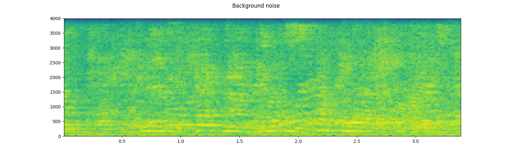
- 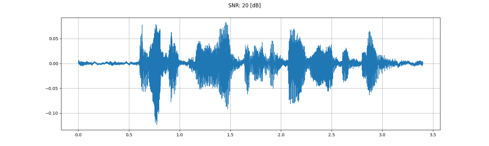
Out:
----------
Source: Original
----------
Sample Rate: 16000
Shape: (1, 39680)
Dtype: torch.float32
- Max: 0.507
- Min: -0.448
- Mean: -0.000
- Std Dev: 0.122
tensor([[ 0.0007, 0.0076, 0.0122, ..., -0.0049, -0.0025, 0.0020]])
----------
Source: Effects Applied
----------
Sample Rate: 16000
Shape: (2, 49600)
Dtype: torch.float32
- Max: 0.091
- Min: -0.091
- Mean: -0.000
- Std Dev: 0.021
tensor([[0.0000, 0.0000, 0.0000, ..., 0.0069, 0.0058, 0.0045],
[0.0000, 0.0000, 0.0000, ..., 0.0085, 0.0085, 0.0085]])
Note that the number of frames and number of channels are different from the original after the effects. Let’s listen to the audio. Doesn’t it sound more dramatic?
plot_specgram(waveform1, sample_rate1, title="Original", xlim=(0, 3.04))
play_audio(waveform1, sample_rate1)
plot_specgram(waveform2, sample_rate2, title="Effects Applied", xlim=(0, 3.04))
play_audio(waveform2, sample_rate2)
- 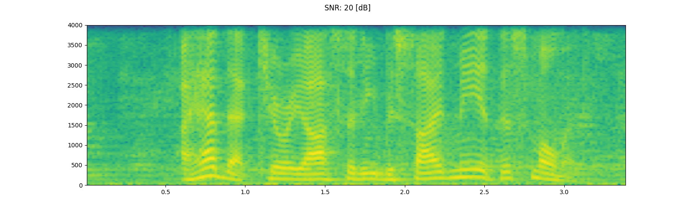
- 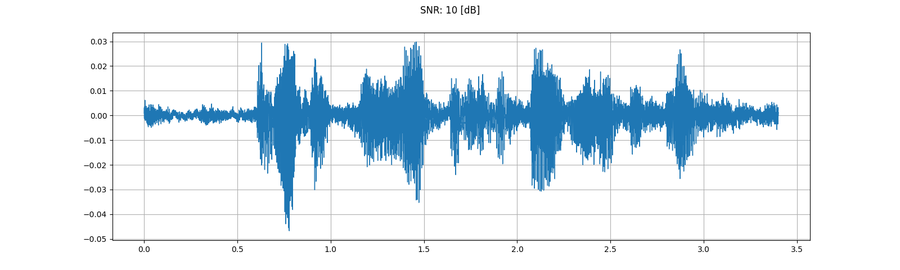
Out:
<IPython.lib.display.Audio object>
<IPython.lib.display.Audio object>
Simulating room reverbration¶
Convolution reverb is a technique used to make a clean audio data sound like in a different environment.
Using Room Impulse Response (RIR), we can make a clean speech sound like uttered in a conference room.
For this process, we need RIR data. The following data are from VOiCES dataset, but you can record one by your self. Just turn on microphone and clap you hands.
sample_rate = 8000
rir_raw, _ = get_rir_sample(resample=sample_rate)
plot_waveform(rir_raw, sample_rate, title="Room Impulse Response (raw)", ylim=None)
plot_specgram(rir_raw, sample_rate, title="Room Impulse Response (raw)")
play_audio(rir_raw, sample_rate)
- 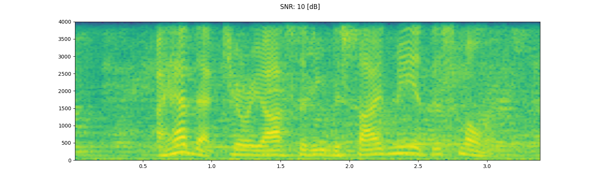
- 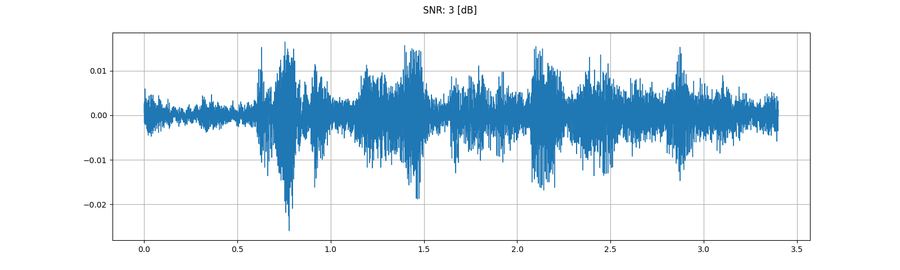
Out:
<IPython.lib.display.Audio object>
First, we need to clean up the RIR. We extract the main impulse, normalize the signal power, then flip the time axis.
rir = rir_raw[:, int(sample_rate*1.01):int(sample_rate*1.3)]
rir = rir / torch.norm(rir, p=2)
rir = torch.flip(rir, [1])
print_stats(rir)
plot_waveform(rir, sample_rate, title="Room Impulse Response", ylim=None)
Out:
Shape: (1, 2320)
Dtype: torch.float32
- Max: 0.395
- Min: -0.286
- Mean: -0.000
- Std Dev: 0.021
tensor([[-0.0052, -0.0076, -0.0071, ..., 0.0184, 0.0173, 0.0070]])
Then we convolve the speech signal with the RIR filter.
speech, _ = get_speech_sample(resample=sample_rate)
speech_ = torch.nn.functional.pad(speech, (rir.shape[1]-1, 0))
augmented = torch.nn.functional.conv1d(speech_[None, ...], rir[None, ...])[0]
plot_waveform(speech, sample_rate, title="Original", ylim=None)
plot_waveform(augmented, sample_rate, title="RIR Applied", ylim=None)
plot_specgram(speech, sample_rate, title="Original")
play_audio(speech, sample_rate)
plot_specgram(augmented, sample_rate, title="RIR Applied")
play_audio(augmented, sample_rate)
- 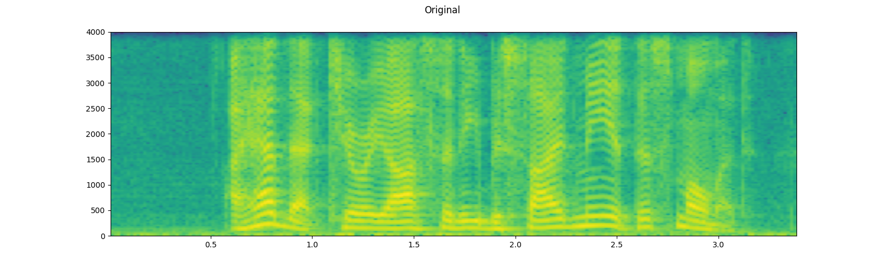
- 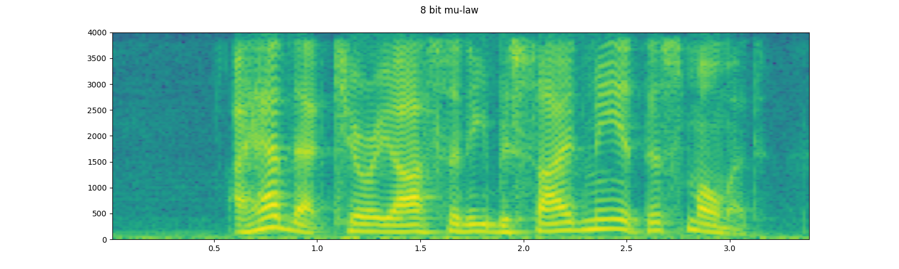
- 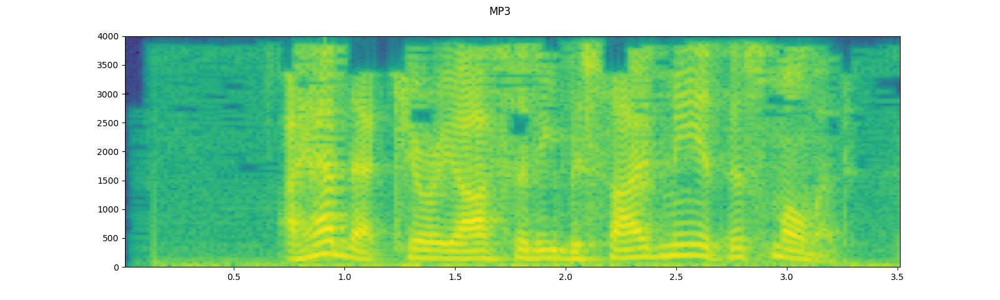
Out:
<IPython.lib.display.Audio object>
<IPython.lib.display.Audio object>
Adding background noise¶
To add background noise to audio data, you can simply add audio Tensor and noise Tensor. A commonly way to adjust the intensity of noise is to change Signal-to-Noise Ratio (SNR). [wikipedia]
sample_rate = 8000
speech, _ = get_speech_sample(resample=sample_rate)
noise, _ = get_noise_sample(resample=sample_rate)
noise = noise[:, :speech.shape[1]]
plot_waveform(noise, sample_rate, title="Background noise")
plot_specgram(noise, sample_rate, title="Background noise")
play_audio(noise, sample_rate)
speech_power = speech.norm(p=2)
noise_power = noise.norm(p=2)
for snr_db in [20, 10, 3]:
snr = math.exp(snr_db / 10)
scale = snr * noise_power / speech_power
noisy_speech = (scale * speech + noise) / 2
plot_waveform(noisy_speech, sample_rate, title=f"SNR: {snr_db} [dB]")
plot_specgram(noisy_speech, sample_rate, title=f"SNR: {snr_db} [dB]")
play_audio(noisy_speech, sample_rate)
- 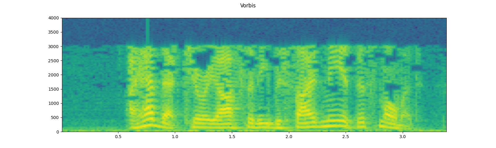
- 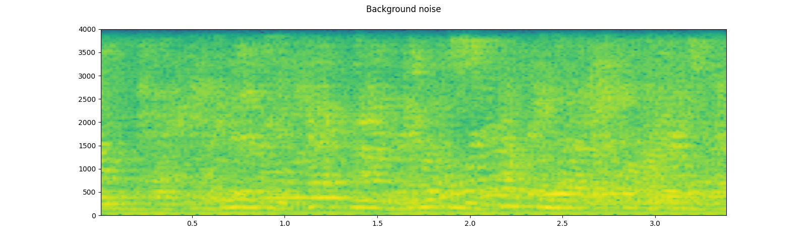
- 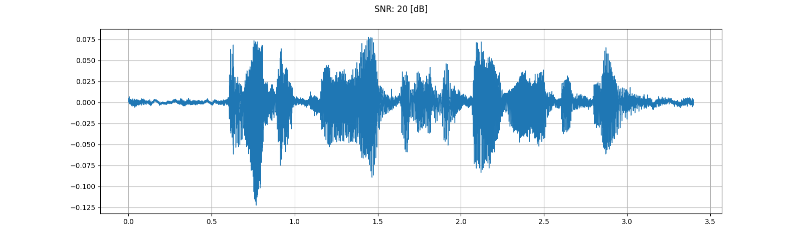
- 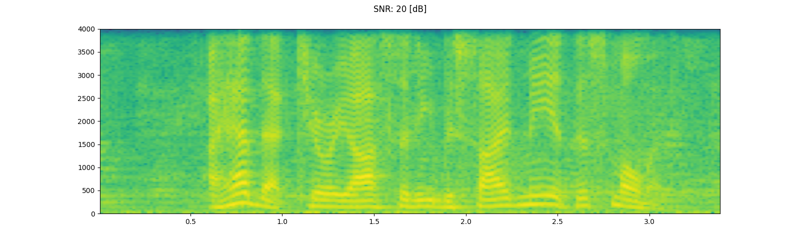
- 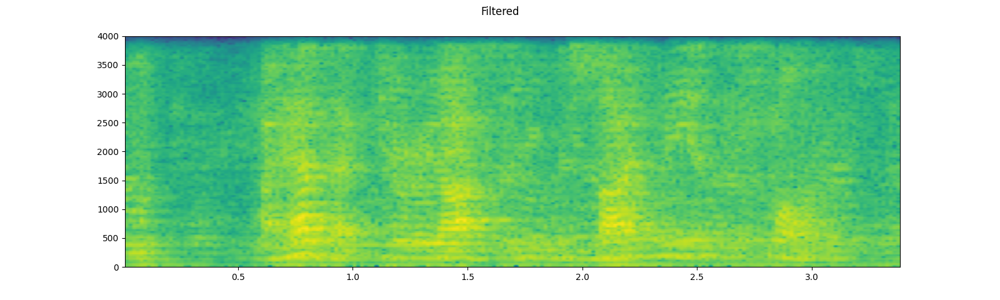
- 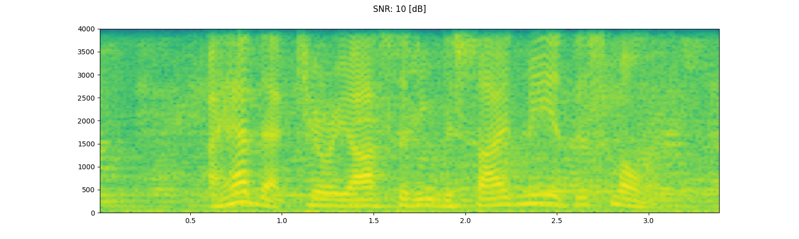
- 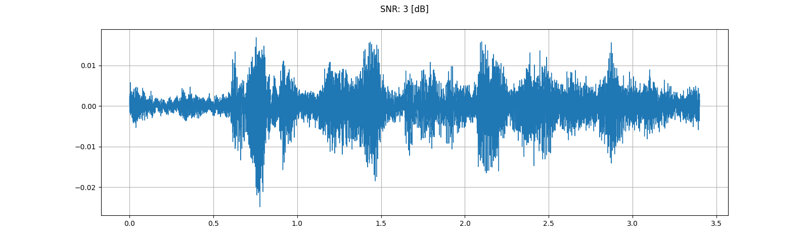
- 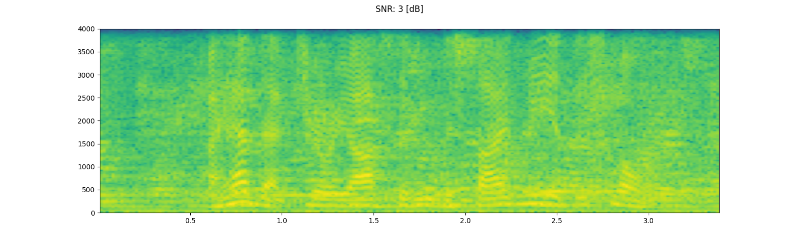
Out:
<IPython.lib.display.Audio object>
<IPython.lib.display.Audio object>
<IPython.lib.display.Audio object>
<IPython.lib.display.Audio object>
Applying codec to Tensor object¶
torchaudio.functional.apply_codec can apply codecs to Tensor object.
Note This process is not differentiable.
waveform, sample_rate = get_speech_sample(resample=8000)
plot_specgram(waveform, sample_rate, title="Original")
play_audio(waveform, sample_rate)
configs = [
({"format": "wav", "encoding": 'ULAW', "bits_per_sample": 8}, "8 bit mu-law"),
({"format": "gsm"}, "GSM-FR"),
({"format": "mp3", "compression": -9}, "MP3"),
({"format": "vorbis", "compression": -1}, "Vorbis"),
]
for param, title in configs:
augmented = F.apply_codec(waveform, sample_rate, **param)
plot_specgram(augmented, sample_rate, title=title)
play_audio(augmented, sample_rate)
- 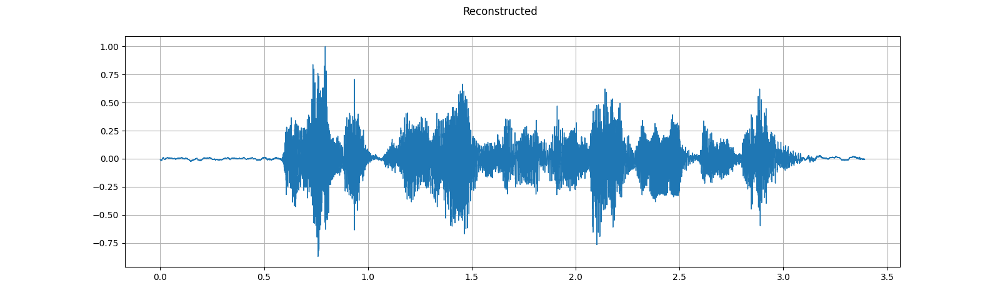
- 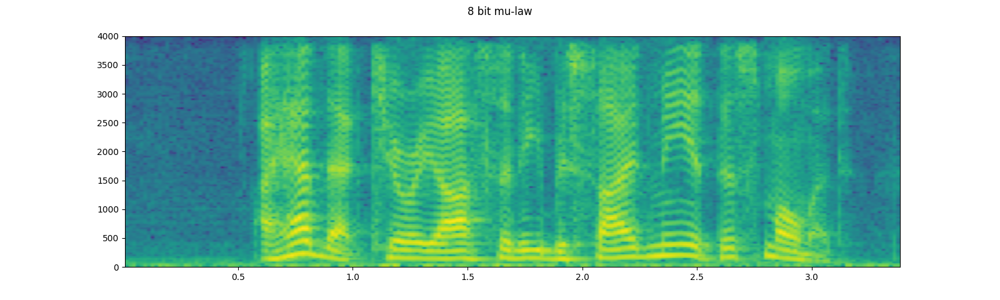
- 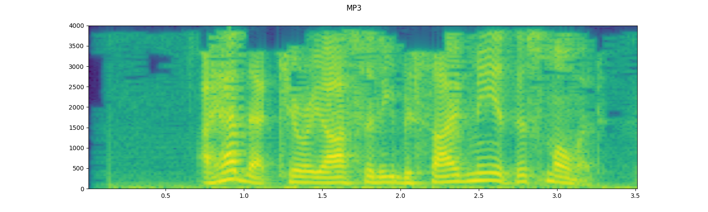

Out:
<IPython.lib.display.Audio object>
<IPython.lib.display.Audio object>
<IPython.lib.display.Audio object>
<IPython.lib.display.Audio object>
<IPython.lib.display.Audio object>
Simulating a phone recoding¶
Combining the previous techniques, we can simulate audio that sounds like a person talking over a phone in a echoey room with people talking in the background.
sample_rate = 16000
speech, _ = get_speech_sample(resample=sample_rate)
plot_specgram(speech, sample_rate, title="Original")
play_audio(speech, sample_rate)
# Apply RIR
rir, _ = get_rir_sample(resample=sample_rate, processed=True)
speech_ = torch.nn.functional.pad(speech, (rir.shape[1]-1, 0))
speech = torch.nn.functional.conv1d(speech_[None, ...], rir[None, ...])[0]
plot_specgram(speech, sample_rate, title="RIR Applied")
play_audio(speech, sample_rate)
# Add background noise
# Because the noise is recorded in the actual environment, we consider that
# the noise contains the acoustic feature of the environment. Therefore, we add
# the noise after RIR application.
noise, _ = get_noise_sample(resample=sample_rate)
noise = noise[:, :speech.shape[1]]
snr_db = 8
scale = math.exp(snr_db / 10) * noise.norm(p=2) / speech.norm(p=2)
speech = (scale * speech + noise) / 2
plot_specgram(speech, sample_rate, title="BG noise added")
play_audio(speech, sample_rate)
# Apply filtering and change sample rate
speech, sample_rate = torchaudio.sox_effects.apply_effects_tensor(
speech,
sample_rate,
effects=[
["lowpass", "4000"],
["compand", "0.02,0.05", "-60,-60,-30,-10,-20,-8,-5,-8,-2,-8", "-8", "-7", "0.05"],
["rate", "8000"],
],
)
plot_specgram(speech, sample_rate, title="Filtered")
play_audio(speech, sample_rate)
# Apply telephony codec
speech = F.apply_codec(speech, sample_rate, format="gsm")
plot_specgram(speech, sample_rate, title="GSM Codec Applied")
play_audio(speech, sample_rate)
- 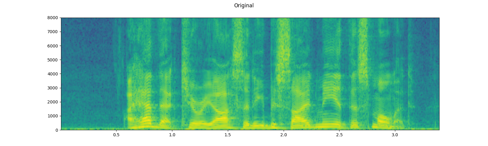
- 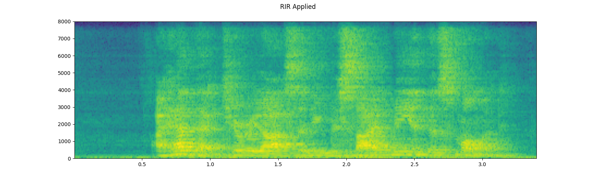
- 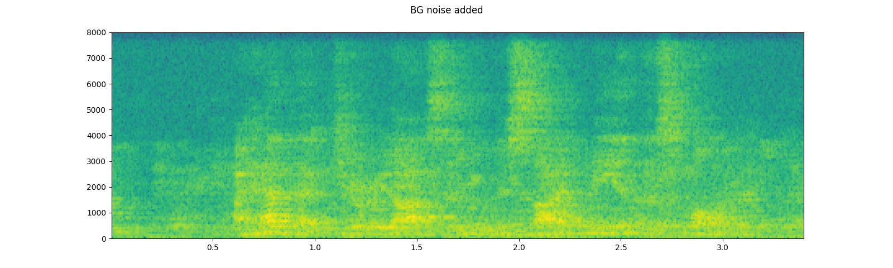

- 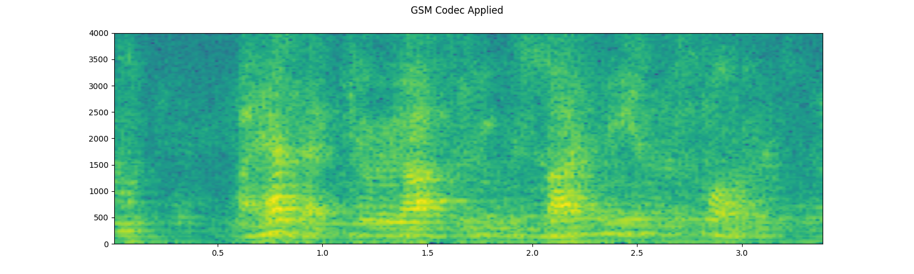
Out:
<IPython.lib.display.Audio object>
<IPython.lib.display.Audio object>
<IPython.lib.display.Audio object>
<IPython.lib.display.Audio object>
<IPython.lib.display.Audio object>
Feature Extractions¶
torchaudio implements feature extractions commonly used in audio
domain. They are available in torchaudio.functional and
torchaudio.transforms.
functional module implements features as a stand alone functions.
They are stateless.
transforms module implements features in object-oriented manner,
using implementations from functional and torch.nn.Module.
Because all the transforms are subclass of torch.nn.Module, they can
be serialized using TorchScript.
For the complete list of available features, please refer to the
documentation. In this tutorial, we will look into conversion between
time domain and frequency domain (Spectrogram, GriffinLim,
MelSpectrogram) and augmentation technique called SpecAugment.
Spectrogram¶
To get the frequency representation of audio signal, you can use
Spectrogram transform.
waveform, sample_rate = get_speech_sample()
n_fft = 1024
win_length = None
hop_length = 512
# define transformation
spectrogram = T.Spectrogram(
n_fft=n_fft,
win_length=win_length,
hop_length=hop_length,
center=True,
pad_mode="reflect",
power=2.0,
)
# Perform transformation
spec = spectrogram(waveform)
print_stats(spec)
plot_spectrogram(spec[0], title='torchaudio')
Out:
Shape: (1, 513, 107)
Dtype: torch.float32
- Max: 4000.533
- Min: 0.000
- Mean: 5.726
- Std Dev: 70.301
tensor([[[7.8743e+00, 4.4462e+00, 5.6781e-01, ..., 2.7694e+01,
8.9546e+00, 4.1289e+00],
[7.1094e+00, 3.2595e+00, 7.3520e-01, ..., 1.7141e+01,
4.4812e+00, 8.0840e-01],
[3.8374e+00, 8.2490e-01, 3.0779e-01, ..., 1.8502e+00,
1.1777e-01, 1.2369e-01],
...,
[3.4708e-07, 1.0604e-05, 1.2395e-05, ..., 7.4090e-06,
8.2063e-07, 1.0176e-05],
[4.7173e-05, 4.4329e-07, 3.9444e-05, ..., 3.0622e-05,
3.9735e-07, 8.1572e-06],
[1.3221e-04, 1.6440e-05, 7.2536e-05, ..., 5.4662e-05,
1.1663e-05, 2.5758e-06]]])
GriffinLim¶
To recover a waveform from spectrogram, you can use GriffinLim.
torch.random.manual_seed(0)
waveform, sample_rate = get_speech_sample()
plot_waveform(waveform, sample_rate, title="Original")
play_audio(waveform, sample_rate)
n_fft = 1024
win_length = None
hop_length = 512
spec = T.Spectrogram(
n_fft=n_fft,
win_length=win_length,
hop_length=hop_length,
)(waveform)
griffin_lim = T.GriffinLim(
n_fft=n_fft,
win_length=win_length,
hop_length=hop_length,
)
waveform = griffin_lim(spec)
plot_waveform(waveform, sample_rate, title="Reconstructed")
play_audio(waveform, sample_rate)

- 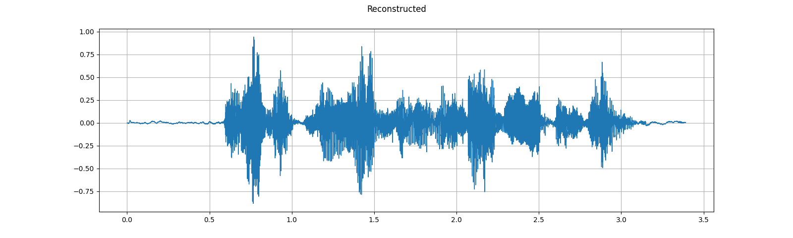
Out:
<IPython.lib.display.Audio object>
<IPython.lib.display.Audio object>
Mel Filter Bank¶
torchaudio.functional.create_fb_matrix can generate the filter bank
to convert frequency bins to Mel-scale bins.
Since this function does not require input audio/features, there is no
equivalent transform in torchaudio.transforms.
n_fft = 256
n_mels = 64
sample_rate = 6000
mel_filters = F.create_fb_matrix(
int(n_fft // 2 + 1),
n_mels=n_mels,
f_min=0.,
f_max=sample_rate/2.,
sample_rate=sample_rate,
norm='slaney'
)
plot_mel_fbank(mel_filters, "Mel Filter Bank - torchaudio")
Comparison against librosa¶
As a comparison, here is the equivalent way to get the mel filter bank
with librosa.
mel_filters_librosa = librosa.filters.mel(
sample_rate,
n_fft,
n_mels=n_mels,
fmin=0.,
fmax=sample_rate/2.,
norm='slaney',
htk=True,
).T
plot_mel_fbank(mel_filters_librosa, "Mel Filter Bank - librosa")
mse = torch.square(mel_filters - mel_filters_librosa).mean().item()
print('Mean Square Difference: ', mse)
Out:
Mean Square Difference: 3.795462323290159e-17
MelSpectrogram¶
Mel-scale spectrogram is a combination of Spectrogram and mel scale
conversion. In torchaudio, there is a transform MelSpectrogram
which is composed of Spectrogram and MelScale.
waveform, sample_rate = get_speech_sample()
n_fft = 1024
win_length = None
hop_length = 512
n_mels = 128
mel_spectrogram = T.MelSpectrogram(
sample_rate=sample_rate,
n_fft=n_fft,
win_length=win_length,
hop_length=hop_length,
center=True,
pad_mode="reflect",
power=2.0,
norm='slaney',
onesided=True,
n_mels=n_mels,
mel_scale="htk",
)
melspec = mel_spectrogram(waveform)
plot_spectrogram(
melspec[0], title="MelSpectrogram - torchaudio", ylabel='mel freq')
Comparison against librosa¶
As a comparison, here is the equivalent way to get Mel-scale spectrogram
with librosa.
melspec_librosa = librosa.feature.melspectrogram(
waveform.numpy()[0],
sr=sample_rate,
n_fft=n_fft,
hop_length=hop_length,
win_length=win_length,
center=True,
pad_mode="reflect",
power=2.0,
n_mels=n_mels,
norm='slaney',
htk=True,
)
plot_spectrogram(
melspec_librosa, title="MelSpectrogram - librosa", ylabel='mel freq')
mse = torch.square(melspec - melspec_librosa).mean().item()
print('Mean Square Difference: ', mse)
Out:
Mean Square Difference: 1.171625851892344e-10
MFCC¶
waveform, sample_rate = get_speech_sample()
n_fft = 2048
win_length = None
hop_length = 512
n_mels = 256
n_mfcc = 256
mfcc_transform = T.MFCC(
sample_rate=sample_rate,
n_mfcc=n_mfcc,
melkwargs={
'n_fft': n_fft,
'n_mels': n_mels,
'hop_length': hop_length,
'mel_scale': 'htk',
}
)
mfcc = mfcc_transform(waveform)
plot_spectrogram(mfcc[0])
Comparing against librosa¶
melspec = librosa.feature.melspectrogram(
y=waveform.numpy()[0], sr=sample_rate, n_fft=n_fft,
win_length=win_length, hop_length=hop_length,
n_mels=n_mels, htk=True, norm=None)
mfcc_librosa = librosa.feature.mfcc(
S=librosa.core.spectrum.power_to_db(melspec),
n_mfcc=n_mfcc, dct_type=2, norm='ortho')
plot_spectrogram(mfcc_librosa)
mse = torch.square(mfcc - mfcc_librosa).mean().item()
print('Mean Square Difference: ', mse)
Out:
Mean Square Difference: 4.2569965330585546e-08
Pitch¶
waveform, sample_rate = get_speech_sample()
pitch = F.detect_pitch_frequency(waveform, sample_rate)
plot_pitch(waveform, sample_rate, pitch)
play_audio(waveform, sample_rate)
Out:
<IPython.lib.display.Audio object>
Kaldi Pitch (beta)¶
Kaldi Pitch feature [1] is pitch detection mechanism tuned for ASR
application. This is a beta feature in torchaudio, and only
functional form is available.
A pitch extraction algorithm tuned for automatic speech recognition
Ghahremani, B. BabaAli, D. Povey, K. Riedhammer, J. Trmal and S. Khudanpur
2014 IEEE International Conference on Acoustics, Speech and Signal Processing (ICASSP), Florence, 2014, pp. 2494-2498, doi: 10.1109/ICASSP.2014.6854049. [abstract], [paper]
waveform, sample_rate = get_speech_sample(resample=16000)
pitch_feature = F.compute_kaldi_pitch(waveform, sample_rate)
pitch, nfcc = pitch_feature[..., 0], pitch_feature[..., 1]
plot_kaldi_pitch(waveform, sample_rate, pitch, nfcc)
play_audio(waveform, sample_rate)
Out:
<IPython.lib.display.Audio object>
Feature Augmentation¶
SpecAugment¶
SpecAugment is a popular augmentation technique applied on spectrogram.
torchaudio implements TimeStrech, TimeMasking and
FrequencyMasking.
TimeStrech¶
spec = get_spectrogram(power=None)
strech = T.TimeStretch()
rate = 1.2
spec_ = strech(spec, rate)
plot_spectrogram(F.complex_norm(spec_[0]), title=f"Stretched x{rate}", aspect='equal', xmax=304)
plot_spectrogram(F.complex_norm(spec[0]), title="Original", aspect='equal', xmax=304)
rate = 0.9
spec_ = strech(spec, rate)
plot_spectrogram(F.complex_norm(spec_[0]), title=f"Stretched x{rate}", aspect='equal', xmax=304)
- 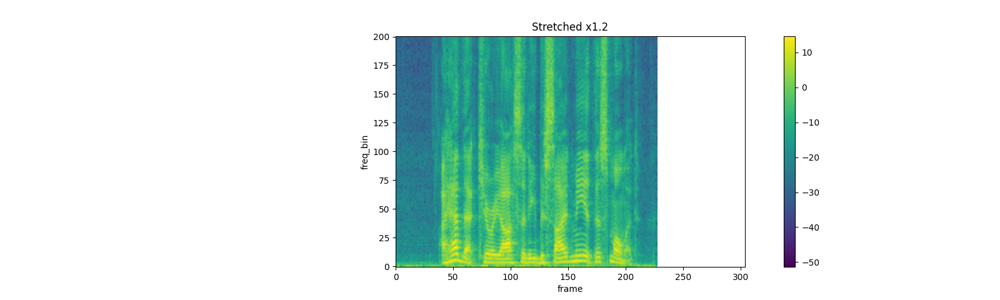

- 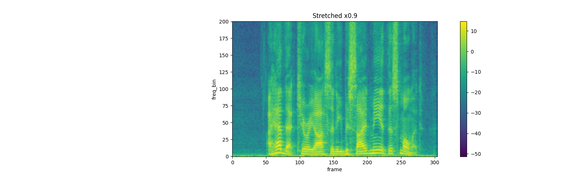
TimeMasking¶
torch.random.manual_seed(4)
spec = get_spectrogram()
plot_spectrogram(spec[0], title="Original")
masking = T.TimeMasking(time_mask_param=80)
spec = masking(spec)
plot_spectrogram(spec[0], title="Masked along time axis")
FrequencyMasking¶
torch.random.manual_seed(4)
spec = get_spectrogram()
plot_spectrogram(spec[0], title="Original")
masking = T.FrequencyMasking(freq_mask_param=80)
spec = masking(spec)
plot_spectrogram(spec[0], title="Masked along frequency axis")

Datasets¶
torchaudio provides easy access to common, publicly accessible
datasets. Please checkout the official documentation for the list of
available datasets.
Here, we take YESNO dataset and look into how to use it.
YESNO_DOWNLOAD_PROCESS.join()
dataset = torchaudio.datasets.YESNO(YESNO_DATASET_PATH, download=True)
for i in [1, 3, 5]:
waveform, sample_rate, label = dataset[i]
plot_specgram(waveform, sample_rate, title=f"Sample {i}: {label}")
play_audio(waveform, sample_rate)

Out:
<IPython.lib.display.Audio object>
<IPython.lib.display.Audio object>
<IPython.lib.display.Audio object>
Total running time of the script: ( 0 minutes 58.138 seconds)